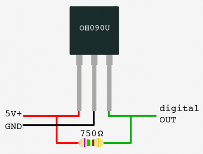
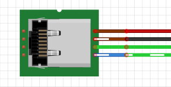
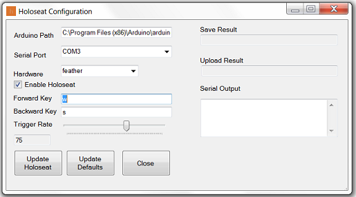
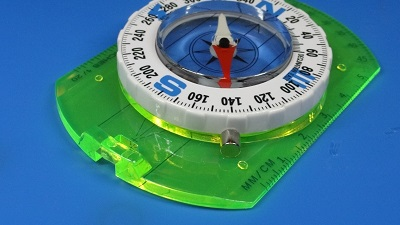
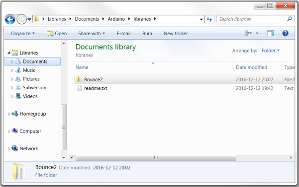

This patch is to remove the nib on the front of the Holoseat sensor module. This modification is required to ensure the signal from the tone ring is reliable.
Before implementing the patch the sensor module will look like this:
After implementing the patch it will look like this:
Below are the assembly instructions for the v0.3 Holoseat. The controller for this version is built using an AdaFruit Feather 32u4 Basic Proto. The sensors are on a remotely mountable board. Final assembly requires an appropriate set of under desk exercise pedals (we recommend DeskCycle or FitDesk ). Note, you will need to use your soldering skills on this build.
Prepare Sensor/LED sub-assemblies Repeat this procedure twice to assemble (2) Sensor/LED sub-assemblies
Take (1) HS004 - OH090U Hall Effect Sensor and (1) HS005 - Diffused Blue 3mm LED from your supplies 
Solder the LED's anode (long leg) to pin 3 of the sensor (the data pin) and solder the LED's cathode (short leg) to pin 2 of the sensor (the ground pin) using the following steps
Align the LED to it sits on top of the sensor with the long leg next to pin 3 and the short leg next to pin 2
Wrap the LED's long leg around pin 3 to create a secure physical connection
Wrap the LED's short leg around pin 2 to create a secure physical connection
Apply solder to the two joints formed in the steps above to secure the connections between the LED and the sensor
Cut approximately 40 cm lengths of black, red, and green hook up wire
Strip both ends of the (3) lengths of hookup wire
Solder the hookup wire to the ends of the sensor pins (red to pin 1, black to pin 2, and green to pin 3) using the following steps
Wrap one end of the red hook up wire around pin 1 to create a secure physical connection
Apply solder to the joint formed in the step above to secure the connections between the red hookup wire and pin 1
Wrap one end of the black hook up wire around pin 2 to create a secure physical connection
Apply solder to the joint formed in the step above to secure the connections between the black hookup wire and pin 2
Wrap one end of the green hook up wire around pin 3 to create a secure physical connection
Apply solder to the joint formed in the step above to secure the connections between the green hookup wire and pin 3
Apply sufficient heat shrink to the red and green joints to cover them completely
Apply sufficient heat shrink to assembly to completely cover the solder joints of all three leads, leaving some overlapping the LED to give it strain releaf
Apply larger heat shrink to the three leads made from the hookup wire to complete the Sensor/LED sub-assembly
Prepare the HS002 - Category 5e Jack
Cut approximately 20 cm each of the following colors of hookup wire: (2) green, (1) red, (1) black
Strip one end of each length of hookup wire
Use a punch down tool to connect the hookup wires to their corresponding positions on the HS002 - Category 5e Jack for pinout option A
Punch down the stripped end of the red hookup wire to Brown wire position of the Cat5e Jack
Punch down the stripped end of the black hookup wire to Brown/White wire position of the Cat5e Jack
Punch down the stripped end of a green hookup wire to Green wire position of the Cat5e Jack
Punch down the stripped end of the other green hookup wire to Blue/White wire position of the Cat5e Jack 
Finish Assembling the Sensor Board Reference the image below for the following steps
Connect the black leads
Test fit the black leads from both Sensor/LED sub-assemblies and the HS002 - Category 5e Jack, cutting the wires to length as necessary (remember to leave room for the stripped wire)
Strip the three black wires from the step above
Position the three black wires above in the correct holes of the HS001 - Double-Side Prototype PCB and bend them over to create a secure physical connection
Apply solder to the joint formed in the step above to secure the connection among the three black leads
Connect the red leads
Take the (2) HS003 - 750 OHM 1/2W 1% Axial Resistors and position them according to the diagram (making sure to bend their leads to secure them in place
Test fit the red leads from both Sensor/LED sub-assemblies and the HS002 - Category 5e Jack, cutting the wires to length as necessary (remember to leave room for the stripped wire)
Strip the three red wires from the step above
Position the three red wires above in the correct holes of the HS001 - Double-Side Prototype PCB and bend them over to create a secure physical connection
Cut a short length of red hookup wire to bridge the red leads according to the diagram
Strip both ends of this additional length of red wire and place it according to the diagram, bending its ends over to create a secure physical connection
Apply solder to the joint formed in the step above to secure the connection among the three red leads
Connect each of the green leads Repeat these steps for each of the sensors' green leads according to the diagram
Test fit the green leads from one of the Sensor/LED sub-assemblies and the HS002 - Category 5e Jack, cutting the wires to length as necessary (remember to leave room for the stripped wire)
Strip the two green wires from the step above
Position the two green wires above in the correct holes of the HS001 - Double-Side Prototype PCB and bend them over to create a secure physical connection
Apply solder to the joint formed in the step above to secure the connection among the two green leads
Connect the HS008 - 16mm Illuminated Pushbutton - Green Momentary
Prepare the HS008 - 16mm Illuminated Pushbutton - Green Momentary
Cut approximately 20 cm each of the following colors of hookup wire: (1) green, (1) red, (2) black
Strip both ends of all (5) lengths of hookup wire
Physically connect one end of the black hookup wire to the (-) terminal of the HS008 - 16mm Illuminated Pushbutton - Green Momentary (this is the negative terminal of the embedded LED)
Solder this joint to complete the connection
Physically connect one end of a green hookup wire to the (+) terminal of the HS008 - 16mm Illuminated Pushbutton - Green Momentary (this is the positive terminal of the embedded LED)
Solder this joint to complete the connection
Physically connect one end of the black hookup wire to one of the remaining terminals of the HS008 - 16mm Illuminated Pushbutton - Green Momentary (this is one of the leads for the switch)
Solder this joint to complete the connection
Physically connect one end of the red hookup wire to one of the remaining terminals of the HS008 - 16mm Illuminated Pushbutton - Green Momentary (this is one of the leads for the switch)
Solder this joint to complete the connection
Connect the LED portion of the HS008 - 16mm Illuminated Pushbutton - Green Momentary
Take (1) HS011 - 220 ohm 1/2W 5% Carbon Film Resistor and place it in the proto area of the HS007 - Adafruit Feather 32u4 Basic Proto, with one pin through a Ground hole and the other toward an edge of the proto area
Solder these joints to complete the connection
Take the black hookup wire connected to the (-) terminal of the HS008 - 16mm Illuminated Pushbutton - Green Momentary and put it through a hole next in the proto field next to the HS011 - 220 ohm 1/2W 5% Carbon Film Resistor
Take the green hook up wire connected to the (+) terminal of the HS008 - 16mm Illuminated Pushbutton - Green Momentary and put it through the hole for pin 13 on the HS007 - Adafruit Feather 32u4 Basic Proto
Solder these joints to complete the connection, making sure to bridge the black wire to the HS011 - 220 ohm 1/2W 5% Carbon Film Resistor
Connect the switch portion of the HS008 - 16mm Illuminated Pushbutton - Green Momentary
Insert the red hookup wire from the HS008 - 16mm Illuminated Pushbutton - Green Momentary into pin 10 (we will be using the built in pullup resistor, so we can simplify the wiring)
Insert the remaining black hookup wire into a ground hole
Solder these joints to complete the connection
Prepare the HS002 - Category 5e Jack
Cut approximately 20 cm each of the following colors of hookup wire: (2) green, (1) red, (1) black
Strip one end of each length of hookup wire
Use a punch down tool to connect the hookup wires to their corresponding positions on the HS002 - Category 5e Jack for pinout option A
Punch down the stripped end of the red hookup wire to Brown wire position of the Cat5e Jack
Punch down the stripped end of the black hookup wire to Brown/White wire position of the Cat5e Jack
Punch down the stripped end of a green hookup wire to Green wire position of the Cat5e Jack
Punch down the stripped end of the other green hookup wire to Blue/White wire position of the Cat5e Jack
Connect the HS002 - Category 5e Jack
Insert the black hookup wire from the HS002 - Category 5e Jack into a ground hole
Solder this joint to complete the connection
Insert the red hookup wire from the HS002 - Category 5e Jack into USB hole
Solder this joint to complete the connection
Insert the green hookup wire connected to the Blue/White connection from the HS002 - Category 5e Jack into a pin 3
Solder this joint to complete the connection
Insert the other green hookup wire from the HS002 - Category 5e Jack into pin 2
The primary objective for the final assembly is to mount the Sensor Board and the HS010 (magnet) on your chosen under desk exercise pedals. At this point in the development we are using easily reversible assembly processes (read tape) so we do not damage the exercise pedals. Note, for convenience these instructions show the Sensor Board and Controller mounted in small plastic containers (e.g. travel toothbrush holders or similar).
Use the HS006 - Cat5e cable to connect the Sensor Board to the Controller
Plug the Controller into the computer using the HS009 - USB cable, the sensor lights should both light up
Place the Sensor Board on top the exercise pedals so the sensors can be placed along the path of the right hand bar of the pedals
Tack in place with two strips of tape
Place the sensors in position. Tacking them down with tape as needed. Be sure to mount them in the same orientation (e.g. the writing faces out for both sensors) to ensure they will both read the magnet as the sensors have a polarity. The cadence sensor (connected to the Blue/White striped lead on the Sensor Board) should be placed ahead of the direction sensor (connected to the Green lead on the Sensor Board) when pedaling. This will be to the left if looking at the sensors from the side of the exercise pedals. Be sure both sensor are in the same arc of the pedal bar so they can both be triggered when the magnet is in place.
Place the HS010 - magnet on the right hand bar of the pedals in line with the arc of the two sensors (it should attach to the pedal bar through its magnetic field)
Adjust the position of the sensors and HS010 - magnet such that each sensor is triggered (indicated by the light switching off as the pedal bar passes the sensor) one at a time (see image below) If neither sensor is triggered try flipping the magnet over (in case of a polarity mismatch) or moving the magnet closer to the arc of the sensors (in case the magnet is beyond the range of the sensors). If both sensors are triggered at the same time try separating the sensors along the path of the arc.
Once the sensors and HS010 - magnet are in position, add sufficient tape to permanently mount the sensors and then the Sensor Board
The Holoseat Final Assembly is complete. Proceed to the Software Set Up instructions to install the firmware and desktop configuration app.
The Holoseat interacts with three external systems: the Player, the Game, and the Configuration App. The Player uses Holoseat directly by pedaling to walk forward or backward in the game and by using the Enable button to control the enabled state of the Holoseat (when enabled pedaling causes key presses, when disabled pedaling does not cause key presses). The Player also uses the Holoseat indirectly through the Configuration App.
The Game and the Configuration App are programs running on the Computer. Both programs expect input from the Player through HID controls. The Game provides interactive entertainment to the Player. Holoseat is currently only compatible with Games utilizing key presses to control walking (e.g wasd). The Configuration App provides controls to change settings in the Holoseat (either live or as new default values).
The Player is connected to the Game and the Configuration App. The Player interacts with the Game through its standard HID controls for all actions except walking forward and backward (these actions, as mentioned above, are controlled through the Holoseat). The Player uses the Configuration App through its HID controls to update settings in the Holoseat.
The Holoseat is connected to the Player, as described above, and to both programs running on the Computer. The Holoseat presents itself as an HID device to the Game and sends the user configured key presses for walking when the Player uses the pedals. The Holoseat uses a custom serial protocol (HSP) to communicate with the Configuration App. This protocol allows the Configuration App to interrogate the Holoseat for its current state (covering both settings and activity) and to update settings on the Holoseat (both live and default values).
The Holoseat presents four external interfaces (also shown on the System Context). They are the Pedals, the Enable Button, an HID interface, and the Holoseat Serial Protocol interface. See the System Context for the uses of these external interfaces.
The Holoseat is composed of four subsystems. They are the Exercise Device (typically an under desk bike or elliptical), the Sensor Triggers, the Sensor Board, and the Controller. The Exercise Device provides the physical interface for the Player (the Pedals) and the required resistance to provide the exercise experience.
The Sensor Triggers and the sensors mounted on the Sensor Board must be matched to provide the required resolution to determine the Player's cadence when pedaling. For example, you could pair Hall effect sensors with magnets for the sensors and Sensor Triggers, making sure to select magnet strength and sensor sensitivity such that they are reliable over the distance between the pedals and the Exercise Device frame. The Sensor Triggers are mounted on the one of the pedal bars and the Sensor Board (with its sensors) is mounted on the Exercise Device chassis.
Finally, the Controller is the embedded system which implements the Holoseat logic. On one side of the Controller is the Sensor Data line, reading sensor trigger events. On the other side is an implementation of the HID protocol. The controller computes the Player's cadence from the sensor events. Using the cadence, the Controller determines when to send key presses to the Game. Additionally, the Controller contains the Enable button, for use by the Player to control the enabled state, and a serial port listening for Holoseat Serial Protocol messages from the Configuration App. HSP messages can be used to update settings in the Controller such as enabled state, trigger cadence, and assigned keys for forward and backward motion.
This page covers research into creating a Bluetooth HID connection from the Holoseat controller to the gaming system (PC or console) and accepting Bluetooth HID connections from user devices (e.g. joypads). The Holoseat controller will need to be able to present itself as either a keyboard & mouse combination or a joypad. The material on this page covers some Bluetooth fundamentals (classic vs BLE), the types of Bluetooth hardware used in some of our target platforms (CHIP Pro, PS4, PCs), and available libraries for interacting with Bluetooth hardware in Node.js. It closes with an interesting (but not usable) example from the maker/hacker community.
Based on the following research, it is far too early to implement Bluetooth features in the Holoseat. Given recent developments in the Bluetooth standard, it is obvious we are only interested in implementing Bluetooth Low Energy (BLE) devices. However, the gaming platforms we are looking at supporting have widely varying support for Bluetooth in any form, with only one platform fully supporting BLE (MacOS). Until there is greater support for BLE on our selected gaming platforms we do not need to develop a means of presenting Holoseat as a Bluetooth peripheral.
The news is only slightly better on the Bluetooth host side of the requirements. While the CHIP Pro has a Bluetooth stack included in the hardware (which supports BLE), the drivers are not yet ready. We could shift to an external Bluetooth module, but that would just add cost that we really don't need to add at present. Instead, the recommended path forward is to select the onboard Bluetooth stack to be the Bluetooth host hardware and delay implementation of Bluetooth host features until the driver is released by NEXT Thing Computing. This will allow us to add support for acting as a Bluetooth host with just a software update at any point in time we decide.
In terms of impact to the 2017 development plan, here are updates to the affected Product Backlog Items
DEV-10: Select BT HID module from CHIP's BT module or an external one Deferred indefinitely, but we will be selecting a specific external module when the time comes (this module from Adafruit is used in the Make Bluetooth book for exactly this purpose)
DEV-11: Select BT Host module from CHIP's BT module or an external one Completed, we will use the CHIP's BT module when the driver is released
Bluetooth has evolved dramatically in the last few years and now comes in multiple "flavors", classic and Bluetooth Low Energy. Classic Bluetooth is the standard most users are familiar with. It is used to connect smart phones to cars and headsets. Classic is the older flavor, it is more common (though that is starting to change in some markets), and it commonly requires pairing. Also, according to posts from Adafruit on their forums making classic devices requires paying costly dues to the Bluetooth SIG.
BLE is a newer Bluetooth flavor, targeting battery powered devices (often sensors) and widely supported by smart phones. It appears to be far more maker friendly as well. It is well supported by Adafruit (Bluetooth products, overwhelmingly BLE) and spawned a new book from Make publishing, Make: Bluetooth.
Human Interface Devices (HID) can be built as either classic or BLE devices. It is not clear if the same device (using the same radio board) can be made to present itself as a classic or BLE device. However, it seems clear that smaller organizations are moving to BLE only development.
From the CHIP Pro datasheet, it uses a Realtek 8723DS combination module which provides Wi-Fi B/G/N and Bluetooth 4.2 LE connectivity." Other documentation has indicated the Bluetooth driver can be set as either a host or a device. So, it can be used to connect with classic and BLE devices or it can present itself as a BLE device (but not both at the same time). See notes above about implementing devices that present themselves as classic devices.
Unfortunately, at present Next Thing Computing has disabled the Bluetooth driver on the CHIP Pro (see this forum post last updated 2017-02-15 for more details). For the time being we cannot demonstrate any level of Bluetooth connectivity with the CHIP Pro and it is not clear when the driver will be enabled.
The PS4 DualShock 4 joypads connect to the PS4 using Bluetooth. Unfortunately, the PS4 only supports classic Bluetooth. Specifically, the PS4 supports Bluetooth 2.1 + EDR.
The following material is from Chapter 1 of Make: Bluetooth. We will include all three PC platforms in this discussion (Windows, MacOS, and Linux). Windows supports classic Bluetooth (specifically v2.1) in Windows XP, Vista, and 7. Windows 8 and 10 support BLE. Note, the availability of Bluetooth hardware on Windows PCs varies greatly, though modern laptops often have some flavor of Bluetooth hardware.
All Apple computers built after 2011 include BLE hardware and MacOS fully supports BLE since Mountain Lion. In short, unlike Windows machines, Macs should just work with the more maker friendly Bluetooth flavor.
Turning to Linux, the results are mixed. The OS itself supports BLE through the BlueZ service. However, like Windows machines, the computers people choose to install Linux on vary greatly in terms of available Bluetooth hardware.
At present Bluetooth support on Holoseat related hardware is all over the map. The CHIP Pro has the hardware for one connection (host or peripheral), but lacks the required drivers. And on the gaming systems side, the common denominator is classic Bluetooth, which is not very maker friendly according to Adafruit. In short, it is too early for a device like Holoseat to fully embrace Bluetooth. At best, we can select the CHIP Pro's onboard Bluetooth stack as the Holoseat's host side Bluetooth implementation, deferring work on it until the drivers are released. But, until more of the gaming machine market supports BLE controllers, there is no real value in developing support for the Holoseat to act as a Bluetooth peripheral.
Sandeep Mistry maintains three Bluetooth libraries which we will likely find useful. Note, they are all BLE only libraries and they only work with specific Bluetooth hardware.
Node.js Libraries
Noble - library to implement a BLE central module (aka host)
Bleno - a library to implement a BLE peripheral (aka device)
In this example, the firmware from the RN-42 onto the HC-05. This kind of hacking, while interesting, is not strictly legal (obtaining the RN-42 firmware is not something one just does), so it is not a recommended approach. However, it does demonstrate how capable a small system can be at capturing signals from one system (the joypad) and in real time translating them to HID over Bluetooth signals. Consider this evidence that the kind of inline gameplay translation we want the Holoseat controller to do is possible. Much of the following research was found by following the links from a Hackaday post - Convert Any USB Keyboard to Bluetooth.
Do a test fit (without glue) of the HSC-03: Controller Housing Base and HSC-10: Controller Housing Mounting Slot by sliding the Controller Housing Base into the Controller Housing Mounting Slot
Separate the Controller Housing Base into the Controller Housing Mounting Slot
Apply super glue to the inner perimeter of the Controller Housing Mounting Slot where the Controller Housing Base will sit, taking care to keep glue out of the cut out for the slot; apply extra super glue to the large raised surface to ensure a strong bond. See yellow lines in image below.
Slide the Controller Housing Base into the Controller Housing Mounting Slot and press the pieces together per the glue's instructions (typically 1 minute)
Insert Feather + Wings into HSC-03: Controller Housing Base
Attach HSC-04: Controller Housing Top onto Controller Housing Base making sure the snap fit connection fully clicks and the inset over TRRS connector seats fully into the Controller Housing Base
Attach HSC-07: Holoseat Custom Key Cap to Keyswitch
The v0.2 design is based on the answer to Q4 of the Initial Questions. The Fritzing drawing shown below covers the prototype design. The remainder of this document covers the design decisions by addressing each of the requirements. Note, the bread board seen in the Fritzing drawing will be replaced with a prototype shield like this one.
R1: Detect movement on the exercise equipment and send walking command to video game (typically by "pressing" the 'w' key)¶
To send key presses, the v0.2 holoseat controller replaces the Arduino Uno + USB Keyboard Controller from v0.1 with an Arduino Leonardo, using the Leonardo's built-in keyboard emulation.
To suppress the walk command signal, a toggle switch will be added with the closed position indicating the walk command should be sent and the open position indicating the walk command should not be sent. The toggle switch used will be a Radioshack #275-645 as with the Arduino Bike Speedometer. See the push button tutorial for an example of reading a switch/button in the source code.
The status of the walk command will be indicated with an LED. The LED will be lit when the walk command is active, and unlit when the walk command is not active. See the LED tutorial for an example of lighting an LED.
Supporting single step will be implemented completely in source code. The current plan is to have different behavior during the reed switch interrupt handler if the RPM is 0 (which should trigger a single key press) vs when the RPM is non-zero (which should work like the vs 0.1 holoseat).
R5: Tune the "walking" speed required to trigger sending the walk command¶
The walking speed (that is the RPM value required to trigger a key press be sent to the computer) will be tuned with a slide style potentiometer. The mid-way point on the slider will indicate the user wishes to use the default walking speed. Lower values on the slider will reduce the walking speed down to a minimum of 50% of the default. Higher values on the slider will increase the walking speed up to a maximum of 150% of the default. See the Potentiometer Tutorial for an example of reading values from a potentiometer.
The firmware for the Holoseat can be found in the SVN Repository. Its basic function is to detect pedal events from the sensor, use the timing of those events to determine the cadence (in RPM), and then send the walk command (generally by pressing the 'w' key) when the pedal speed is greater than the specified trigger speed.
The default parameters for the firmware are stored in the holoseat_constants.h file so they will be available at start up without the need for a connection to the desktop control application. The desktop control application modifies the default values by updating the values of the corresponding constants in this file and then flashing updated firmware to the Holoseat. The following parameters have default values in the constants file.
Default Walk Forward Character - what key is sent to move the character forward in the game
Default Walk Backward Character - what key is sent to move the character backward in the game
Default Holoseat Enabled - is the Holoseat enabled by default?
Default Trigger Cadence - how fast does the user need to pedal (in RPM) to trigger walking?
Default Logging Enabled - is serial logging enabled by default?
Default Logging Interval - how long between messages in serial logging in deci-seconds (0.1 of a second)
The HoloSeat firmware has a serial protocol, the Holoseat Serial Protocol (HSP), to enable the desktop control application to modify all key parameters and to determine the current configuration of the Holoseat.
The HSP supports three commands. Each command is made up of a single upper case character indicating the statement type. One command, the (S)et statement, also takes an input string.
? - Ready(?) command; used to determine if the HoloSeat is ready to receive commands over the HSP (will reply with the (R)eady message followed by one standard state message if the HoloSeat is ready)
S <config string> - (S)et command; used to send updated configuration to HoloSeat (HoloSeat will reply with OK on success). The config string has the following format: <WFC>,<WBC>,<E>,<TC>,<L>,<LI> - example: S w,s,0,60,0,20
<WFC> - Walk forward character (example: w)
<WBC> - Walk backward character (example: s)
<E> - Enabled? Must be a 0 (disabled) or a 1 (enabled) (example: 1)
<TC> - Trigger cadence (example: 65)
<L> - Logging enabled? Must be a 0 (disabled) or a 1 (enabled) (example: 1)
<LI> - Logging interval in deci-seconds (example: 10)
Q - (Q)uery command; used to request the HoloSeat send one standard state message (see Protocol Messages below)
The HSP has two messages. One is a single character message similar to the commands and one is the HSP standard state message which is sent after initialization, in reply to a (Q)uery command, and as the serial logging message.
R - (R)eady; sent by the HoloSeat to indicate it is ready for serial communication; sent in reply to the Ready(?) command and when serial port is attached in debug mode (to be added)
<VER>,<WFC>(<DWFC>),<WBC>(<DWBC>),<E>(<DE>),<C>/<TC>(<DTC>),<L>(<DL>)/<LI>(<DLI>) - standard state message, see below for key; example: 1.2.3,w(w),s(s),1(1),70/65(75),1(0)/10(10)
<VER> - Firmware version string (example: 1.2.3)
<WFC> - Walk forward character (example: w)
<DWFC> - Default walk forward character (example: w)
<WBC> - Walk backward character (example: s)
<DWBC> - Default walk backward character (example: s)
<E> - Enabled? Must be a 0 (disabled) or a 1 (enabled) (example: 1)
<DE> - Default enabled state, same format as <E> (example: 1)
<C> - Current cadence rounded to whole number; positive value means direction is forward, negative value means direction is backward (example: 70)
<TC> - Trigger cadence (example: 65)
<DTC> - Default trigger cadence (example: 75)
<L> - Logging enabled? Must be a 0 (disabled) or a 1 (enabled) (example: 1)
<DL> - Default logging enabled, same format as <L> (example: 0)
<LI> - Logging interval in deci-seconds (example: 10)
<DLI> - Default logging interval in deci-seconds (example: 10)
Always start a serial session by sending a Ready(?) command. If a (R)eady message is not received, wait and try again until a timeout is reached or a (R)eady message is received. Be sure to check the version string sent in the initial standard state message to ensure your app is compatible with the version of the HoloSeat firmware.
After you have initialized your connection, you can then use the (Set) and (Q)uery commands as necessary to control and observe the HoloSeat's state.
Follow the manufacturers instructions to assemble the exercise equipment (supported exercise equipment includes DeskCycle and DeskCycle 2). Note, you should stop after you have completed the steps covering installing the equipment's feet and pedals. Holoseat will replace the included "bike computer".
Requires: exercise equipment, tone ring, and hex key
Use included hex key to remove the two screws from the tone ring
Pull the two tone ring halves apart
Place the exercise equipment with the right hand side facing you
Place the two tone ring halves around the axle, taking care to line the screw holes away from the crank arm (otherwise the crank arm will block access to the screws in later steps)
Press the two tone ring halves together until they fit snugly over the axle and the screw holes line up (you will need to maintain pressure on the Tone Ring halves until both screws have been replaced)
Use the included hex key to replace one of the screws you removed in step 2.1, taking care to maintain pressure on the tone ring halves and to keep the screw straight as it goes in. Do not over tighten or you may strip the threads
Clean the area on where the Sensor will be attached with the alcohol wipe and let dry
Remove the adhesive backing from the sensor
Hold the spacer against the tone ring
Place the sensor on the exercise equipment with the narrow end pointing at the center of the tone ring and touching the spacer. Hold in place for 60 seconds
Take one end of the sensor cable and plug it into the jack in the sensor, making sure to support the sensor with your fingers when you press the cable into place (it should click into place)
Take the other end of the sensor cable and plug it into the jack in the controller
Ensure the cable is not in the path of the crank arm or pedal
Place exercise equipment in front of seat where you will be playing your games, making sure the pedals are at a comfortable distance and can be operated smoothly from your seat
Be sure to set resistance for the exercise equipment, if in doubt start with a lower setting and work up to higher settings
TL;DR - This is something we will want to do for v1.0 not v0.4. It will allow use to identify Holoseat as Holoseat and not a Feather, Arduino, etc. This will be important for drivers on Windows and to make it easier for the serial client to identify the Holoseat via the description. We should still go ahead and register for a PID now so we have it reserved.
The Holoseat controller has a two layer communication stack. The lower (private) layer is a custom serial protocol, implemented in JSON messages. The upper (public) layer is a Socket.io event/message API wrapping around the serial protocol. This architecture places the bulk of the responsibility for implementation on the firmware, accessed using the private layer. The public layer is then only responsible for passing messages in/out of the private API and reporting when the Holoseat is disconnected.
This page serves to document both layers. Each event/message will be covered at a conceptual level followed by layer specific information and examples.
This section covers the events and message that the controller responds to (aka those sent to the controller by clients).
Note, the various set_* events only broadcast their corresponding client events when they receive data that leads to an actual state change. So, if the Holoseat is already enabled and set_enabled is called with a value of True, then no state change will occur and in turn the enabled event will not be broadcast to the clients.
forward = dictionary: how to respond to forward pedaling
hid(string <"keyboard" | "mouse" | "joypad">): what device is being emulated for this direction (v1.0.x will only support keyboard)
responses(array of dictionaries): list of responses keyed off of trigger cadences
triggerCadence(int): action occurs when current cadence >= triggerCadence; use 0 for at all cadences
actions(array): set of discrete hid actions to take (e.g. [shift, w] could indicate pressing the shift+w on keyboard); specifics are device emulation dependent, will be specified in a separate doc; actions are always to hold some hid signal until cadence changes and action is reevaluated (in other words actions cannot be single press/click)
reverse(dictionary): how to respond to reverse pedaling (same structure as forward)
This section covers the events and message that clients must respond to (aka those sent by the controller to clients).
Note, events and messages read from the private layer may leave out the client_id. No client_id indicate public layer shoud broadcast the event/message to all connects clients (this ia the typcial behavior). Otherwise, the event/message should be sent only to th specified client.
Note, The public layer is the layer which determines if the state is "disconnected". This determination is made every time an event is handled by the public layer. If Holoseat is disconnectd, this event will be broadcast to all clients regardless of value in the client_id field or the original event received.
Message Data:{"type":"controller_version", "message":{"device":"<device name>", "hwVer":"<major version number>", "fwVer":"<major.minor.patch version number>"}}
Serial Message:{"event_name":"message", "client_id":<socket.id>, "data":{"type":"controller_version", "message":{"device":"<device name>", "hwVer":"<major version number>", "fwVer":"<major.minor.patch version number>"}}}
TODO - port all of this data over to the HSP page (except /api/debug) and explain how the REST API is mapped to the HSP. Then link to HSP for full details of the calls.
Items in italics are for future development. These methods will return a 501 not implemented status code (see status codes for more details).
URI
Verb
Operation
/api/main/devicename
GET
Returns the name of the Holoseat device attached to the system
/api/main/enabled
GET
Returns current enabled state
/api/main/enabled
PUT
Update enabled state
/api/main/stepsize
GET
Returns current step size [1-4]
/api/main/stepsize
PUT
Update current step size [1-4]
/api/main/profile
GET
Returns current profile name (will end in a * if settings have been updated since profile was set)
/api/main/profile
PUT
Sets current profile name (cannot end in a '*') Note: sending an empty string as the profile name will suspend configuration update messages until a non-empty profile name is set.
/api/main/cadence
GET
Returns current cadence (>0 means forward, <0 means reverse) and cadence level [0-4]. See firmware notes for definition of cadence level.
/api/main/version
GET
Returns hardware, firmware, and HSP version data
/api/forward
GET
Returns current forward action (see below), returns 404 status if no forward action is active
/api/forward
PUT
Sets current forward action (see below)
/api/forward
DELETE
Clears current forward action
/api/forward/sprint
GET
Returns current forward sprint action (see below), returns 404 status if no forward sprint action is active
/api/forward/sprint
PUT
Sets current forward sprint action (see below)
/api/forward/sprint
DELETE
Clears current forward sprint action
/api/reverse
GET
Returns current reverse action (see below), returns 404 status if no reverse action is active
/api/reverse
PUT
Sets current reverse action (see below)
/api/reverse
DELETE
Clears current reverse action
/api/reverse/sprint
GET
Returns current reverse sprint action (see below), returns 404 status if no forward sprint action is active
/api/reverse/sprint
PUT
Sets current reverse sprint action (see below)
/api/reverse/sprint
DELETE
Clears current reverse sprint action
/api/defaults
GET
Returns current defaults (see below)
/api/defaults
POST
Sets new defaults (see below)
/api/defaults
DELETE
Restore factory defaults (see below)
/api/resistance
GET
Returns current resistance setting of the pedals
/api/resistance
PUT
Sets current resistance setting of the pedals
/api/debug
GET
Returns current debug state (True/False) as defined by the service configuration
/api/debug/serial
PUT
Sends a serial message to Holoseat (returns result as JSON string or status 401 not authorized if debug state is false)
Device [keyboard|mouse|joypad] - what device is being emulated to implement this action #Input - what input value (e.g. key on a keyboard or button on a mouse) is being activated by the command
Command [press|hold] - how the input value should be sent: press = press and release the input (e.g. press a key on a keyboard or click a mouse button) hold = press and hold the input (e.g. hold down a key on a keyboard or a button on a mouse)
End [release|repeat|noop] - how to end the action release = release the held input (requires command 'hold') repeat = repeat the action to end the action (requires command 'press') noop = no steps required to end the action, it will timeout in game (requires command == 'press')
The JSON format for an action is show below for the default forward action (hold down the 'w' key down on a keyboard)
The default settings for the Holoseat are those settings which are persisted in non-volatile memory. They represent the most generic use case for the Holoseat and as such make a number of assumptions about the default actions associated with pedaling forward and backward.
Specifically, the default settings assume the only device being emulated is a keyboard, with a command/end pairing of hold/release for both the forward and backward actions. Further, the default settings assume there are no sprint actions. These assumptions leave the following minimum set of default settings.
Enabled [True|False] - whether the Holoseat starts in the enabled state or not
Step Size [1-4] - the relative length of single steps (smaller values yield shorter steps)
Forward Character [alphanumeric character] - the key to press as the default forward action
Reverse Character [alphanumeric character] - the key to press as the default reverse action
The JSON format for default settings is show below for the factory defaults.
Note, the default settings are written to the Holoseat controllers EEPROM which has an expected life of approximately 100,000 write operations. While this should allow for more than sufficient lifespan for the Holoseat controller, we still want to take precautions to avoid malicious code burning through the available write operations. To that end, the POST method on /api/defaults will be protected to only support calls from the application GUI. Additionally, there will be a minimum 5 second timeout that must elapse between calls to update the default settings.
A1. The Holoseat is a video gaming accessory which uses the drive to play video games to encourage regular exercise. It accomplishes this by coupling exercise directly into the video game experience. It should be functional enough to support initial sales to end users as both a kit and finished product.
A2. PC based video game players who play games which involve character movement in 3rd or 1st person (role playing games, massively multiplayer role playing games, first person shooters, etc).
A3. Players attach the Holoseat interface to a recumbent exercise bike or elliptical machine and to a computer. The Holoseat interface then detects the motion from the exercise equipment and sends the appropriate keystrokes for walking (or other locomotion) to the computer. In this way, players must use the exercise equipment as part of the game experience.
A5. Later versions of the Holoseat may have the following features:
Support "walking" vs "running" in game play through different speeds on the exercise equipment
Allow for changing the in game locomotion command(s) without reprogramming (to expand the style and list of games supported)
Someday, want to support having the Holoseat plugged inline between a controller and a PC or gaming console, passing through signals from the controller not related to locomotion, suppressing those which are, and emulating the signals for locomotion when the exercise equipment is used. The idea is to allow the Holoseat to be used with consoles and make it easy for most games to be controlled partly from the exercise equipment.
A7. The Holoseat will be offered as both a kit and a completed product. The kit version will be built by gamers and makers. The complete product will be built by Holoseat staff.
A8. Eventually, one for every gaming PC and console on the planet. For now, it will be built in limited batches (one and two at a time). Development will include a series of prototypes leading to an initial production version optimized for assembly by makers as a kit.
A9.As controllers cost between $35 and $50. The kit should be in the same level of price, which with a 2.6 times mark up means material costs for the Holoseat parts should be between $14 and $20. Budget for prototyping should cover several generations of prototypes and account for non-production components, giving a development budget of $300.
J. is investigating how to automate the test rig to minimize user induced error during sensor comparison tests and later performance tests. This plan was inspired by working with Nodebots.
Holoseat supports any game which uses wasd control schemes. Pedal forward to use 'w' actions and pedal backwards to use 's' actions. In both cases simply stop pedaling to stop the current action.
Is the illuminated 'h' key lit? If not, enable the Holoseat by pressing the illuminated 'h' key.
Is the cable connecting the sensor to the controller plugged in firmly at both ends? If not, disconnect Holoseat from the computer, connect the sensor to the controller, then connect the Holoseat back to the computer.
Welcome to the Holoseat. We hope it serves you as well as it has our development team (yes, we really use it). Please be sure share your experience online.
The Operating Manual covers the set up and use of the Holoseat. It starts with the steps needed to prepare the Holoseat for first time use. It then moves on to how to use the Holoseat hardware while playing your games, followed by instructions for the desktop configuration app. Finally, the Operating Manual closes with some troubleshooting steps.
There are two physical components to the Holoseat: the sensors which are attached to your exercise pedals and the controller which is connected to the sensors and your computer.
Begin setting up the Holoseat by placing your pedals in front of your computer at a comfortable distance from your chair. Pedal a few times from your preferred position for gaming to ensure you can use the pedals while playing.
Next, place the Holoseat controller next to your computer so you can reach the Enable button (the large green button on the Holoseat controller, it will light up when the Holoseat is enabled)
Connect the Holoseat sensors to the Holoseat controller using a Cat5 cable
Connect the Holoseat controller to the computer using a USB cable. The sensor lights should light up, and if you are using the standard default settings the Holoseat controller Enable button should be lit indicating the Holoseat is enabled and that pedaling will result in keystrokes on the computer.
Test the Holoseat by opening a text editor (e.g. Notepad on Windows) and pedaling forward. If you are using the standard default settings, you should see a string of 'w' characters printed in the text editor.
If you are running Windows and have not already installed the desktop configuration app, download it from here and unzip the files to Documents\Holoseat.
Be sure to adjust the resistance on your pedals to a level that is not too easy and not too hard (you are looking for a resistance level that challenges you while still allowing you to pedal for long periods of time). If the resistance is too low you will overshoot your walk cadence and have difficulty using Holoseat in games. If you set it too high you will tire yourself out before the end of a gaming session and have difficulty getting your character to walk.
Similarly, use the desktop configuration app (see below) to set a default cadence that works for you. It should not be too slow nor too fast.
As you will see, using the Holoseat in game in intuitive and only takes a few minutes to learn. Once you are in a game which uses keyboard controls to control motion (e.g. wasd) all you have to do to use the Holoseat is pedal to move and stop pedaling to stop.
If you pedal forward your character will walk forward. If you pedal backwards, your character will walk backwards. Holoseat currently supports to walking speeds: single step and continuous walking. To single step, simply pedal one rotation (either forwards or backwards). To walk continuously (forward or backward), you need to pedal at or above your trigger cadence (controlled in the desktop configuration app). While you are pedaling you will see the sensor lights blink off as you pedal past each sensor. This behavior indicates the sensor recognizes your pedal activity. If you do not see the lights blink off adjust the magnet/sensor placement until you do.
The Holoseat can be disabled so you can use the pedals without triggering keystrokes during non-gaming activities. Press the green Enable button on the Holoseat controller to disable or enable Holoseat. The Enable button will be lit when Holoseat is enabled and unlit when it is disabled. Note, you can also disable/enable Holoseat from the desktop configuration app.
The desktop configuration app resides in the Windows system tray. Start it by running Documents\Holoseat\HoloseatConfigurationUtility\HoloseatConfig.exe. Then bring up the user interface by clicking the 'h' icon in the system tray.
You can use the desktop configuration app to make live updates to Holoseat's settings (these changes are not preserved when Holoseat loses power, e.g. when it is unplugged) and to update its default settings (these changes are preserved when Holoseat loses power). Before using the configuration app, ensure the Serial Port is set correctly (it usually finds the correct port) and the Hardware select box is set to feather.

You can control four settings in the desktop configuration app.
Enable/Disable Checking the Enable Holoseat checkbox will enable the Holoseat, unchecking will disable it
Forward Key Enter a single key to be pressed when walking forward. Note, this value is case sensitive ('w' is different than 'W' to the Holoseat)
Backward Key Enter a single key to be pressed when walking backward. Note, this value is case sensitive ('s' is different than 'S' to the Holoseat)
Cadence Move the Trigger Rate slider to adjust how fast you need to pedal to begin walking (this setting affects walking forward and backward). The exact value will be displayed in the field below.
To push your changes as live updates, click the Update Holoseat button. To push your changes as updates to the default values, click the Update Defaults button. Note, updating defaults requires installation and configuration of the Arduino IDE. See Software Setup page for more details (be sure to specify the path to your Arduino IDE installation in Arduino Path field).
There are a couple of things to try when your character is not walking.
Is the Enabled button lit? If not, enable the Holoseat by pressing the Enable button or using the desktop configuration app.
Are the sensor lights blinking off when you pedal past them? If not, adjust the placement of the magnet/sensors until they do.
Check the resistance on your pedals and the trigger cadence in the desktop configuration app to ensure they are set properly for you.
It takes a long time for my character to start or stop walking¶
This issue is usually caused by improper configuration of the Holoseat. You should adjust the resistance on your pedals so it is neither too easy nor too hard. Then adjust your cadence in the desktop configuration app until walking works naturally. You may need to adjust these settings from time to time as you build up your strength.
My character sometimes stops then starts walking again while I pedal¶
This issue is usually caused by improper configuration of the Holoseat. You should adjust the resistance on your pedals so it is neither too easy nor too hard. Then adjust your cadence in the desktop configuration app until walking works naturally. You may need to adjust these settings from time to time as you build up your strength.
Holoseat uses two boards: the Controller (an Adafruit Feather 32u4 Basic Proto running the Holoseat firmware) and the Sensor Board (a custom board to connect the sensors to a Cat5 jack so the sensors can be mounted on the exercise pedals and the Controller can be close to the user, typically next to the user's keyboard). For the current version, the boards are built from proto-boards, so there are no Holoseat specific PCBs. Later versions will migrate to Holoseat specific PCBs.
The Holoseat Controller electronics are simple enough to fit onto the prototyping area of the Adafruit Feather 32u4 Basic Proto. The key components are the Cat5 jack and an LED push button (HS008). The Cat5 jack is connected to pins 2 and 3 (for reading interrupts from the two Hall effect sensors), ground, and the USB power (to provide 5v to the sensors). The LED push button is treated as a separate button and LED. The button portion is connected to pin 10 and uses the Feather's internal pull-up resistor. Finally, the LED portion is connected to pin 13 (per the Arduino Blink tutorial).
The Sensor Board electronics are built on a perfboard. The key components are the Cat5 jack and two sensor/LED modules. The Cat5 jack is used to connect the sensors to the Controller board using a Cat5e cable. The sensor/LED modules are composed of an OH090U Hall Effect Sensor (HS004) and a Diffused Blue 3mm LED (HS005). The LED is wired directly to the sensor to provide low level diagnostic information without using the Controller. As long as the sensor is receiving power and is untriggered (that is no magnet is within sensing range) the LED will be lit. The LED will turn off when the sensor is triggered by a magnet indicating the sensor is working correctly. Note, the sensors have a polarity like magnets and will only be triggered by a magnet if the correct pole is facing the sensor.
Place the 18PTR-01: Snap Fit 18 Pole Tone Ring Base on heat proof mat with the spacer supporting the overhanging tab
Place 18PTR-04: M3 x 0.5 mm Thread Size, 3.8 mm Installed Length Heat-Set Inserts for Plastics face up into the the hole in the Tone Ring Base (when setting the insert, try press fitting it into place to seat it prior to later steps)
Set Soldering Iron to 350 Celsius and wait for it to reach temperature
Use the flat of the soldering iron tip to apply gentle pressure to the Heat-set Insert until it melts into the hole and sits flush. Take care not to twist or shift the insert.
Select 1 18PTR-03: N52 3/16" x 3/16" Neodymium Cylinder Magnet
Find the Magnet's south pole using the magnetic compass (this is the pole which attracts the north/red indicator - see references) 
Align the Base so that the tab is closer to you than the slot
Apply super glue to the half magnet slot away from you and insert the magnet so that the south pole identified above faces out in the Tone Ring; take care that the Magnet is flat in its slot and hold it in place for 60 seconds
Select another magnet and find its polarity by placing it along the outside edge so that it becomes attracted to the previous magnet
Rotate the magnet from the previous step 180 degrees (so that the pole attracted to the previous magnet is facing out to create a pole pair) and place it in the next slot in the base
Repeat the previous two steps until the tone ring is fully populated
Note: You will need (2) in progress HS-03: 18 Pole Tone Ring Halves which going forward will be considered a complete set
Take 2 Tone Ring Halves, insert the tabs from each into the slots of the other, and push until they form a single disc (there may be a click as the exposed magnets seat into the other half)
Check the alignment of the screw hole on each half with the Heat-set Insert to verify the HS-07: 18-8 Stainless Steel Flanged Button Head Screw, M3 x 0.5 mm Thread Size, 5 mm Long will set properly
If the alignment is good move on to the next step
Otherwise, disassemble the 2 halves and use the soldering iron to correct the alignment (retest fit as necessary)
Use the HS-08: 49 mm 2mm Hex Tip Key L Wrench with short arm to screw in the two Screws to complete the tone ring assembly
If the alignment is good the assembly is complete
Otherwise, disassemble the 2 halves and use the soldering iron to correct the alignment (retest fit as necessary)
As the Holoseat only controls locomotion, you will need to use a keyboard or a controller for other inputs. One of the Holoseat developers prefers to play games on a recumbent exercise bike, and in turn uses a controller. For PC games, he uses JoyToKey to map an XBox 360 Wired controller to keystrokes. Below are the configuration files for the games he has played using the Holoseat.
To use these files, download and unzip JoyToKey, then download the cfg file(s) for the game in question to the JoyToKey executable directory. The next time you run JoyToKey (note, the JoyToKey developer recommends running JoyToKey as an administrator), the configuration(s) you downloaded will be listed. Simply select the one matching the game you want to play and things should be ready to go. Browse the key mappings in JoyToKey to see how the controller has been configured. Note, the walk command (w) is not mapped in these config files as the Holoseat will provide this input.
These instructions cover the software set up of a newly built Holoseat controller. There are three pieces of software required to configure and use the Holoseat: the Arduino IDE, the Holoseat controller firmware, and the desktop configuration app.
Note, these steps are for Windows (tested on Windows 7). The process is similar on other platforms, but the desktop configuration app only runs on Windows for v0.3. Future versions will support other platforms.
Open the Arduino IDE Preferences by selecting File>Preferences from the menu
Add https://adafruit.github.io/arduino-board-index/package_adafruit_index.json to the Additional Boards Manager URLs field
Click the OK button to save the new preferences
Launch the Boards Manager by selecting Tools>Board>Board Manager from the menu
Select Contributed from the Type select box
Select Adafruit AVR Boards by Adafruit in the list of contributed boards then click the Install button
Click the Close button, then exit out of the Arduino IDE (you may optionally relaunch the Arduino IDE and verify the list of boards under Tools>Board includes the Adafruit Feather)
ON WINDOWS ONLY Install the Windows Adafruit Drivers (optional: only select the Feather 32u4 to minimize the number of drivers installed)
Copy the Arduino libraries to the Holoseat libs directory
Launch the Arduino IDE
Open the Arduino IDE Preferences by selecting File>Preferences from the menu
Note the Sketchbook location (typically Documents\Arduino)
Close the Arduino IDE Preferences and exit the Arduino IDE
Copy Documents\Holoseat\Firmware\libs\Bounce2 to the libraries folder in the sketchbook folder (typically Documents\Arduino\libraries) 
The desktop configuration app does not currently require any installation steps. You can run it directly from Documents\Holoseat\HoloseatConfigurationUtility
The Holoseat project has three software elements. The first software element is the firmware running on the Holoseat controller. The second software element is the desktop configuration app. And the third software element is the test rig software (composed of more firmware and test execution software). This page covers each of these elements and the serial protocol between the Holoseat controller and the desktop configuration app.
The Holoseat controller firmware can be found in the SVN Repository. It runs on an Adafruit Feather and relies on the Bounce2 library for button debouncing. Its function is to detect pedal events from the sensor, use the timing of those events to determine the cadence (in RPM) and direction (forward or backward), and then send the walk command (generally by pressing the 'w' or 's' key) when the pedal speed is greater than the specified trigger cadence.
The default parameters for the firmware are stored in the holoseat_constants.h file so they will be available at start up without the need for a connection to the desktop configuration app. The following parameters have default values in the constants file.
Default Walk Forward Character - what key is sent to move the character forward in the game
Default Walk Backward Character - what key is sent to move the character backward in the game
Default Holoseat Enabled - is the Holoseat enabled by default?
Default Trigger Cadence - how fast does the user need to pedal (in RPM) to trigger walking?
Default Logging Enabled - is serial logging enabled by default?
Default Logging Interval - how long between messages in serial logging in deci-seconds (0.1 of a second)
The Holoseat configuration app can be found in the SVN Repository. It is written in C# and runs in the Windows System Tray (other operating systems will be supported in future releases). The configuration app requires a locally installed copy of the Arduino IDE to update the default parameters in the Holoseat controller and uses the SerialPortStream 2.0 library to manage the serial communications with the Holoseat controller for live updates to the Holoseat settings. Its function is to display and modify current settings for the Holoseat and allow users to update the default values for those settings.
The configuration app modifies the default parameters by updating the values of the corresponding constants in holoseat_constants.h and then flashing updated firmware to the Holoseat controller. It is the need to flash the controller with updated firmware that drives the need for a local installation of the Arduino IDE. If it is not present, the configuration app disables this feature.
The configuration app uses the Holoseat Serial Protocol (see below) to display and update the current settings. These settings will remain in the Holoseat controller until they are changed again using the configuration app or the Holoseat loses power (e.g. when unplugged or the host computer is shutdown). At which point, the Holoseat reverts to its default parameter values when next used.
The test rig software can be found in the SVN Repository. The test rig was developed to support research into the sensor and magnet pairing. It is made up of an Arduino Uno driving a stepper motor. The stepper motor has an arm attached to it with magnets on the end to simulate users pedaling. Finally, a Raspberry Pi runs the tests and hosts the sensors under test, receiving signals from the magnets attached to the stepper motor as it turns. A test case includes a magnet, a sensor, and a simulated pedaling cadence.
The test rig software is made up of two components:
test rig firmware - running on the Arduino Uno driving a stepper motor
test scripts running on the Raspberry Pi, written in NodeJS, defining the tests performed with the test rig
The test rig firmware uses AccelStepper v1.45 to implement an open loop controller on the test rig's stepper motor. This controller drives the stepper motor at a specified cadence (in rpm). The cadence is specified as an integer on the serial port.
The test scripts use the Johnny-Five library to connect to the peripherals required for the test. The first peripheral is the Arduino running the stepper motor controller (over serial port). The second peripheral is the sensor under test (over a GPIO port). Tests are defined first in a csv file. The generate-test-files.js script converts the csv file listing all of the desired tests into a set of JSON files, each defining a single test. The scripts run-char-tests.js and run-doe-test.js implement two testing patterns (characterization and Design of Experiments, respectively). These scripts parse a test definition JSON file and write out test results in a csv time history file. The set-cadence.js script is a command line tool to set the stepper motor cadence (used before and after tests to start and stop the stepper motor). The remaining scripts are demonstration tools to verify code was functional before being integrated into the test execution scripts.
Note: This documentation is deprecated for v0.4.0+. See HSP page for updated documentation.
The HoloSeat firmware has a serial protocol, the Holoseat Serial Protocol (HSP), to enable the desktop configuration app to modify all key parameters and to determine the current configuration of the Holoseat at runtime.
The HSP supports three commands. Each command is made up of a single upper case character indicating the statement type. One command, the (S)et statement, also takes an input string.
? - Ready(?) command; used to determine if the HoloSeat is ready to receive commands over the HSP (will reply with the (R)eady message followed by one standard state message if the HoloSeat is ready)
S <config string> - (S)et command; used to send updated configuration to HoloSeat (HoloSeat will reply with OK on success). The config string has the following format: <WFC>,<WBC>,<E>,<TC>,<L>,<LI> - example: S w,s,0,60,0,20
<WFC> - Walk forward character (example: w)
<WBC> - Walk backward character (example: s)
<E> - Enabled? Must be a 0 (disabled) or a 1 (enabled) (example: 1)
<TC> - Trigger cadence (example: 65)
<L> - Logging enabled? Must be a 0 (disabled) or a 1 (enabled) (example: 1)
<LI> - Logging interval in deci-seconds (example: 10)
Q - (Q)uery command; used to request the HoloSeat send one standard state message (see Protocol Messages below)
The HSP has two messages. One is a single character message similar to the commands and one is the HSP standard state message which is sent after initialization, in reply to a (Q)uery command, and as the serial logging message.
R - (R)eady; sent by the HoloSeat to indicate it is ready for serial communication; sent in reply to the Ready(?) command and when serial port is attached in debug mode (to be added)
<VER>,<WFC>(<DWFC>),<WBC>(<DWBC>),<E>(<DE>),<C>/<TC>(<DTC>),<L>(<DL>)/<LI>(<DLI>) - standard state message, see below for key; example: 1.2.3,w(w),s(s),1(1),70/65(75),1(0)/10(10)
<VER> - Firmware version string (example: 1.2.3)
<WFC> - Walk forward character (example: w)
<DWFC> - Default walk forward character (example: w)
<WBC> - Walk backward character (example: s)
<DWBC> - Default walk backward character (example: s)
<E> - Enabled? Must be a 0 (disabled) or a 1 (enabled) (example: 1)
<DE> - Default enabled state, same format as <E> (example: 1)
<C> - Current cadence rounded to whole number; positive value means direction is forward, negative value means direction is backward (example: 70)
<TC> - Trigger cadence (example: 65)
<DTC> - Default trigger cadence (example: 75)
<L> - Logging enabled? Must be a 0 (disabled) or a 1 (enabled) (example: 1)
<DL> - Default logging enabled, same format as <L> (example: 0)
<LI> - Logging interval in deci-seconds (example: 10)
<DLI> - Default logging interval in deci-seconds (example: 10)
Always start a serial session by sending a Ready(?) command. If a (R)eady message is not received, wait and try again until a timeout is reached or a (R)eady message is received. Be sure to check the version string sent in the initial standard state message to ensure your app is compatible with the version of the HoloSeat firmware.
After you have initialized your connection, you can then use the (Set) and (Q)uery commands as necessary to control and observe the HoloSeat's state.
Select a 18PTR-03: N52 3/16" x 3/16" Neodymium Cylinder Magnet and place it length wise into one of the slots in the 18PTR-01: 18 Pole Tone Ring Base
Select another magnet and find its polarity by placing it along the outside edge so that it becomes attracted to the previous magnet
Rotate the magnet from the previous step 180 degrees (so that the pole attracted to the previous magnet is facing out to create a pole pair) and place it in the next slot in the base
Repeat the previous two steps until the tone ring is fully populated
Welcome to the Holoseat. We hope it serves you as well as it has our development team (yes, we really use it). Please be sure share your experience online.
The User's Guide covers the set up and use of the Holoseat. It starts with the steps needed to prepare the Holoseat for first time use (First Time Setup). It then moves on to how to use the Holoseat hardware while playing your games (Operating Instructions). If you have questions, please reach out to us on our Support Forums.
Initial prototype - This is the proof of concept for the Holoseat. It uses a USB Keyboard controller board, an Arduino Uno, and a reed switch (which replaced a homemade rotary encoder). It has been in use for 8 months with few problems. It will be replaced with a simpler v0.2 prototype which will replace the USB keyboard controller and Arduino Uno with an Arduino Leonardo.
Pre-production prototype - this version of the Holoseat will work out the kinks from v0.1 and add user convenience features. In particular, it will use a simplified design (an Arduino Leonardo in place of both the Arduino Uno and the USB Keyboard controller) and implement the remainder of the required features. These include:
Suppress the walk command
Indicate the status of the walk command
Support single steps vs continuous walking
Tune the walking speed required to trigger continuous walking (time/budget permitting)
I hate exercise. It really just doesn't do anything for me (well, except keep me healthy). And I love video games. Especially role playing games like Mass Effect, Fallout, and now MMOs like Star Wars The Old Republic. Of course, what my life really needs is more time spend sitting on my couch or at my desk.
Sound familiar? If so, you should check out my latest project: the Holoseat. Think of it as the smallest precursor to the Enterprise's holodeck and Deep Space Nine's holosuite. Inspired by the now defunct Excite Bike (later renamed PedalSense), the Holoseat takes the idea of exercise bike as controller beyond sports games and into all game genres including role playing, first person shooters, and platfomers. It also does away with the need to hack your XBox controller, instead opting for keyboard emulation on PCs. The Holoseat uses an Ardunino Leonardo to measure pedal rates (like your bike computer does) and to send the appropriate keyboard commands for walking to your PC when you are pedaling fast enough.
Take a look at the the video below to get an idea of how it works. Note, this is from the very first working prototype, and all of the performance bugs you see have been addressed in the current version.
Oh, and want to know if it works? Well, since completing the second generation prototype, and subscribing to Star Wars The Old Republic 8 months ago, I have lost nearly 40 lbs. Of course, I am also eating better, but there is a noticeable difference in my weight loss when I am home playing my game 5-7 nights a week versus when I am on business trips and have to ride a regular exercise bike which I only manage to do a couple times a week. Clearly, your mileage may vary, but the Holoseat has been a life changer for me.
Which is why I am releasing it as open source hardware. Once the third version is complete, I will also be launching a Kickstarter to fund the initial round of production hardware (both kits and finished versions). Watch the News feed for more details.
Improved Prototype - this version of the Holoseat will apply lessons learned from the previous versions and work to make the Holoseat more robust in preparation for a production prototype. In particular, it will look into the use of Hall effect sensors in place of the reed switch and it will investigate the use of a desktop application to interact with the Holoseat to adjust the configuration and get feedback from the Holoseat controller. Specific development will include:
Testing the use of Hall effect sensors
Support for "reverse walking"
Support for "running" vs "walking" based on step rate in games which support two speeds of movement
Updated documentation including improved instructions (format, drawings from Fritzing instead of photos, etc)
Development of a desktop client (Windows only for this version) which will
Support updating the controller's firmware
Manage configuration (save defaults to the Holoseat controller, adjust live settings that reset to defaults on controller restart)
Holoseat activity reporting (number of steps in this session, this hour, this day, this week, this month, this year, life)
Potentially tie into website for badges, etc based on activity level and games played
Support weigh ins?
Items marked with a strike through were dropped in favor of completing v0.3 in time for SyndCon 2016.
Production prototype - The goal for the production prototype is to develop a unit suitable for the first crowd source campaign (closed beta). Details to follow.
The "TLE4966":Speed & Direction Sensor TLE4966 is the proposed sensor package for Holoseat. It is produced by Infineon. It comes in a number of form factors, listed below.
hw includes all electro-mechanical elements of the system (so sensor and tone ring are hw, but bike pedals are generally not since they are interchangeable)
fw is coupled to hw (hw must support the fw access to sensors, etc) and to sw (sw uses the HSP in the fw to implement REST API and to interact with the hw)
Looking for a scheme where parallel version numbers across hw/sw/fw indicate compatibility
Version numbers may be multi-digit, aka, v1.0.9 does not automatically become v1.1.0 on next patch, it becomes v1.0.10
Product - the top most level of compatibility grouping, defined by the principle capability set. There is no expectation of hw/sw/fw compatibility between products. Each product has its own version history. Examples of products:
Holoseat (standard) - current development effort, requires a PC for use, emulates HID devices but does not proxy for HID devices. Not suitable for consoles. May require additional software (such as key mapper) for users who wish to achieve similar results to proxying HID devices
Holoseat Advanced - next major development effort, utilizes system on a chip to replace need for PC and to implement HID proxy. Will enable use of Holoseat with consoles.
Major - a version of a product with significant feature changes from the previous version of the same product. There is no expectation of hw/sw/fw compatibility between major versions. Major versions should be reserved for introduing changes that require hardware upgrades (e.g. changing the type of sensor used or the number of poles in a tone ring) but dont fundamentally change the nature of the product (e.g. the same capability but implemented in a new manor or adding new way to support the capability, specifically in a way that does not require a new architecture for the system).
Adding BLE to the standard Holoseat so it can connect to tablets or phones would be a major version change as it requires a hardware upgrade, but that upgrade just means adding a new outbound HID path which is in line with the existing architecture.
Supporting proxy for HID devices would be a product change as it means adding an inbound HID path and all the code and potential hw needed to implement the proxy behavior.
Minor - a version of a product with incremental feature changes (e.g. additions or marking of existing features as deprecated) not requiring a hardware change. Used to bring improved experience to existing users.
Patch - a version which does not add any new behaviors. Used to introduce bug fixes or refinements. Patch level should never impact compatibility.
sw/fw is compatible with hw if and only if the product and major version match
sw and fw are compatible iif their product, major, and minor versions all match. In other words, any new features in sw or fw will require cutting new version of the other even if it is just to keep versions in sync (though most new features not requiring hw changes, and in turn a major version release, are expected to require updates to the sw and fw, so this requirement is not expected to be a burden)
Patch releases must always be compatible based on the above rules and will not be used in compatibility verification
hw will include a resistor to electrically identify its major version number and its product ID will be determined from the USB VID/PID
Product identification can include an optional release level string to designate alpha, beta, and release hardware (also managed by vid/pid combos)
Patch and lot number will be stamped on case and pcb
Initial flashing of fw will be a bootstrap fw to return product ID and version number of the hardware to support using standard fw installers that will only run on compatible hw by verifying product ID and major version before installing the fw
After initial flashing operation, fw installers will ensure the fw version being installed matches the product and the major version of the hw using the HSP before installing upgrade fw (this is mostly a statement about customer experience, but as noted above we will also rely on it in house after installing bootstrap fw0
fw will report product (based on USB VID/PID), hw version (based on hw electrical value), and fw version (based on constant values in fw code)
fw will throw an error if its product (also captured as constant value in fw code) does not match hw product or if hw and fw versions are incompatible during calls to get deviceName or get version
sw will ensure hw/fw versions are compatible as part of establishing serial connection to hw and throw errors if the hw/fw are incompatible
HSP version will no longer be separately tracked, it will be considered the fw API and in turn tracked by the fw version string
The REST API version will not be separately tracked, it will be considered the sw API and in turn tracked by the sw version string
Holoseat Alpha - we want Alpha to be fully compatible with the first released product. Therefore, it must identify itself as the same product ID. We also want the initial release to be v1, so the Alpha will be v1 so that the sw and fw will remain compatible. Note, these versions will only be allowed from feather vid/pid combos
Hand soldered wing - v1.x.0 on physical labels and v1 electrically
Custom pcb wing - v1.x.1 on physical lables (may have additional patch releases if the wings require updates during the Alpha) and still v1 electrically
Holoseat initial release - this will be the completely custom pcb in place of feather and wings. This is the first full commercial release. All of the following versions must be associated with Holoseat vid/pid combo
Initial release - v1.x.? (Where ? is the next number in the patch series) on physical labels, and still v1 electrically
sw/fw will immediately begin reporting v1.0.0 as their version numbers and begin enforcing compatibility as possible based on the rules above
Should collapse device name and version info into a single get versions method reporting (all three report product for easy debugging of incompatibilities, and they are reported even when an error is detected). Drop v from version strings in API, add it back when displaying to user in UI
hw
product
version
fw
product
version
sw (added by REST call, requires dedicated handler)
product
version
Need to work on error propagation/handling in JsonSerial class and fw
About page URLs
Need to generate URL to wiki version page based on product ID (including secondary id) and major and minor version numbers (to account for sw/fw docs). Means have to generate a new version page for each release of software, but only certify with Oswha at major versions (so hold off until releases?)
Looking for urls like
wiki/version1_0_Alpha
wiki/version1_0
wiki/version1_1
wiki/version2_0_Alpha
Then organize page with anchor tags for hw data, sw data, and fw data and use the version page plus anchor tags to send users to docs about this version of hw, sw, fw. This new org will also be reflected in the wiki nav bar.
Welcome to the Holoseat Wiki. Holoseat is a gaming peripheral for PCs (it works with Windows, Mac OS, and Linux) that turns your video games into workouts. Every step you take in your game is driven by pedaling in the real world. Using Holoseat is an immersive experience (players pedal faster when their characters are in danger) and invisible. This combination masks the exercise experience in game play, transforming exercise from a chore into a natural part of a gamer's day. In short, Holoseat exerfies your games!
Holoseat is an open source hardware project (v0.3 is certified as open source by OSHWA) and all aspects of its development are managed on Open Design Engine. As an open source hardware project, you have access to all of the design details of Holoseat and can participate in any manner you want. Do you want to follow along with the development team until we release the first commercial version? Great, check out the Want to learn more? section. Do you just have to have a Holoseat of your own right now? No problem, check out the Want to build your own? section. Do you have an idea for how to improve Holoseat? Do you want to help us bring Holoseat to market (this includes technical and business development work)? Awesome! Check out the Want to join the Holoseat team? section.
No matter what brought you here today, be sure to sign up for our newsletter to stay up to date on our journey toward 1.0 and our first commercial release.
So, you want to learn more about Holoseat? First, have you signed up for our newsletter? If not, follow the link and sign up. Our newsletter comes out between each of our development cycles, or sprints (roughly every 8 weeks) and covers our last sprint (what we planned and what we did) and next sprint (what we are planning to do).
Want to know how to use Holoseat? Check out our home page for an infographic summarizing how Holoseat works. Looking for more details, check out the Operating Manual. If you want to know a little about the science behind Holoseat, check out this blog post.
Finally, if you are looking for the technical details of Holoseat, take a look at the Design Data. The Block Diagram documents the Holoseat system architecture (what are the components of the Holoseat and how do they relate to their environment?). The Schematics and PCB Files covers the design of the electronic components of Holoseat (the controller and sensor boards). And the Project Software describes each of the software elements of the Holoseat project and how they work.
So, you want to build your own Holoseat? You're in luck. As an open source hardware project, all of the plans and assembly instructions for Holoseat are published here on Open Design Engine. Just check out the Assembly Information links in the navigation bar on the right. The Bill of Materials lists all of the materials required to build the Holoseat electronics (you still need to BYOP - Bring Your Own Pedals - don't have a set, we recommend DeskCycle if you prefer peddles or FitDesk for elliptical). Then just follow the Assembly Instructions and the Software Set Up and you will have your very own Holoseat.
So, you want to join our team and help us get to market faster? Step one is to sign up for an account on Open Design Engine. Step two is to introduce yourself on the forums. We welcome any and all comers. Found a bug? Report it. Have an idea? Share it on the forums. Want to help with the development? Let us know on the forums and we will include you in our weekly meetings and development cycle. Want to help on the business side? Again let us know on the forums and we will be in touch about how we can work together. What are you waiting for? Sign up and introduce yourself!
{kind=link}
{kind=link}